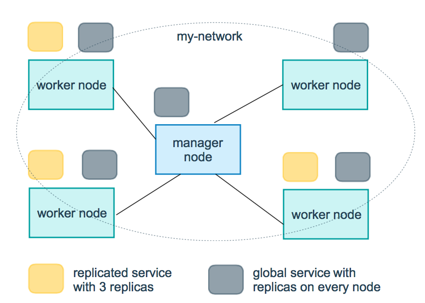

docker详解
Docker 可以让开发者打包他们的应用以及依赖包到一个轻量级、可移植的容器中，然后发布到任何流行的 Linux 机器上，也可以实现虚拟化。
架构
Docker 包括三个基本概念:
- 镜像（Image）：Docker 镜像（Image），就相当于是一个 root 文件系统。比如官方镜像 ubuntu:16.04 就包含了完整的一套 Ubuntu16.04 最小系统的 root 文件系统。
- 容器（Container）：镜像（Image）和容器（Container）的关系，就像是面向对象程序设计中的类和实例一样，镜像是静态的定义，容器是镜像运行时的实体。容器可以被创建、启动、停止、删除、暂停等。
- 仓库（Repository）：仓库可看成一个代码控制中心，用来保存镜像。
Docker 使用客户端-服务器 (C/S) 架构模式，使用远程API来管理和创建Docker容器。Docker 容器通过 Docker 镜像来创建。

| 概念 | 说明 |
|---|---|
| Docker 镜像(Images) | Docker 镜像是用于创建 Docker 容器的模板，比如 Ubuntu 系统。 |
| Docker 容器(Container) | 容器是独立运行的一个或一组应用，是镜像运行时的实体。 |
| Docker 客户端(Client) | Docker 客户端通过命令行或者其他工具使用 Docker SDK与 Docker 的守护进程通信。 |
| Docker 主机(Host) | 一个物理或者虚拟的机器用于执行 Docker 守护进程和容器。 |
| Docker Registry | Docker 仓库用来保存镜像，可以理解为代码控制中的代码仓库。Docker Hub(https://hub.docker.com) 提供了庞大的镜像集合供使用。一个 Docker Registry 中可以包含多个仓库（Repository）；每个仓库可以包含多个标签（Tag）；每个标签对应一个镜像。通常，一个仓库会包含同一个软件不同版本的镜像，而标签就常用于对应该软件的各个版本。我们可以通过 <仓库名>:<标签> 的格式来指定具体是这个软件哪个版本的镜像。如果不给出标签，将以 latest 作为默认标签。 |
| Docker Machine | Docker Machine是一个简化Docker安装的命令行工具，通过一个简单的命令行即可在相应的平台上安装Docker，比如VirtualBox、 Digital Ocean、Microsoft Azure。 |
客户端
docker 客户端非常简单 ,我们可以直接输入 docker 命令来查看到 Docker
客户端的所有命令选项。可以通过命令 docker command --help
更深入的了解指定的 Docker 命令使用方法。
容器使用
获取镜像
如果我们本地没有 ubuntu 镜像，我们可以使用 docker pull 命令来载入 ubuntu 镜像：
1 | docker pull ubuntu |
启动容器
1 | docker run -it ubuntu /bin/bash |
参数说明：
- -i: 交互式操作。
- -t: 终端。
- ubuntu: ubuntu 镜像。
- /bin/bash：放在镜像名后的是命令，这里我们希望有个交互式 Shell，因此用的是 /bin/bash。
在使用Docker时，往往需要在容器创建完成后自动删除容器。这个过程可以通过在docker run命令中使用--rm选项来实现。--rm选项表示在容器终止运行时自动删除该容器。当容器运行结束后，Docker自动将其停止，并删除该容器及其所有数据。使用--rm选项的优点在于避免了占用过多的存储空间，并确保每次容器重启时从一个干净的状态开始。
1 | docker run --rm -it ubuntu:latest /bin/bash |
容器命名
当我们创建一个容器的时候，docker 会自动对它进行命名。另外，我们也可以使用 --name 标识来命名容器，例如：
1 | runoob@runoob:~$ docker run -d -P --name runoob training/webapp python app.py |
容器查询
1 | docker ps //正在运行的容器 |
退出终端
1 | exit |
后台运行
在大部分的场景下，我们希望 docker 的服务是在后台运行的，我们可以过 -d 指定容器的运行模式。
1 | docker run -itd --name ubuntu-test ubuntu /bin/bash |
进入容器
在使用 -d 参数时，容器启动后会进入后台。此时想要进入容器，可以通过以下指令进入：
- docker attach
- docker exec：推荐大家使用 docker exec 命令，因为此命令会退出容器终端，但不会导致容器的停止。
attach 命令
1 | docker attach <容器 ID> |
注意： 如果从这个容器退出，会导致容器的停止。
exec 命令
1 | docker exec -it <容器 ID> /bin/bash |
注意： 如果从这个容器退出，容器不会停止，这就是为什么推荐大家使用 docker exec 的原因。
停止、启动、重启
1 | docker stop <容器 ID> |
支持操作多个，如：
1 | docker stop <容器 ID> <容器 ID> <容器 ID> |
操作所有：
1 | docker stop $(docker ps -a -q) |
删除容器
删除容器时，容器必须是停止状态，否则会报错误。
1 | docker rm -f <容器 ID> |
清理掉所有处于终止状态的容器：
1 | docker container prune |
导出容器
1 | docker export 1e560fca3906 > ubuntu.tar |
导出容器 1e560fca3906 快照到本地文件 ubuntu.tar。
导入容器快照
可以使用 docker import 从容器快照文件中再导入为镜像，以下实例将快照文件 ubuntu.tar 导入到镜像 test/ubuntu:v1:
1 | cat docker/ubuntu.tar | docker import - test/ubuntu:v1 |
端口映射
随机映射
1 | runoob@runoob:~# docker pull training/webapp # 载入镜像 |
Docker 开放了 5000 端口（默认 Python Flask 端口）映射到主机端口 32769 上。
指定端口
1 | runoob@runoob:~$ docker run -d -p 5000:5000 training/webapp python app.py |
查看端口
除了使用ps命令，还可以使用port：
1 | runoob@runoob:~$ docker port bf08b7f2cd89 |
查看容器日志
1 | runoob@runoob:~$ docker logs -f bf08b7f2cd89 |
查看容器内的进程
1 | runoob@runoob:~$ docker top wizardly_chandrasekhar |
检查
使用 docker inspect 来查看 Docker 的底层信息。它会返回一个 JSON 文件记录着 Docker 容器的配置和状态信息。
1 | runoob@runoob:~$ docker inspect wizardly_chandrasekhar |
镜像使用
当运行容器时，使用的镜像如果在本地中不存在，docker 就会自动从 docker 镜像仓库中下载，默认是从 Docker Hub 公共镜像源下载。
列出镜像列表
1 | runoob@runoob:~$ docker images |
各个选项说明:
- REPOSITORY：表示镜像的仓库源
- TAG：镜像的标签
- IMAGE ID：镜像ID
- CREATED：镜像创建时间
- SIZE：镜像大小
同一仓库源可以有多个 TAG，代表这个仓库源的不同个版本，如 ubuntu 仓库源里，有 15.10、14.04 等多个不同的版本，我们使用 REPOSITORY:TAG 来定义不同的镜像。如果你不指定一个镜像的版本标签，例如你只使用 ubuntu，docker 将默认使用 ubuntu:latest 镜像。
拉取镜像
1 | Crunoob@runoob:~$ docker pull ubuntu:13.10 |
删除镜像
1 | $ docker rmi hello-world |
更新镜像
从已经创建的容器中更新镜像，并且提交这个镜像
1 | runoob@runoob:~$ docker run -t -i ubuntu:15.10 /bin/bash |
在运行的容器内使用 apt-get update 命令进行更新。在完成操作之后，输入 exit 命令来退出这个容器。此时 ID 为 e218edb10161 的容器，是按我们的需求更改的容器。我们可以通过命令 docker commit 来提交容器副本。
1 | runoob@runoob:~$ docker commit -m="has update" -a="runoob" e218edb10161 runoob/ubuntu:v2 |
各个参数说明：
- -m: 提交的描述信息
- -a: 指定镜像作者
- e218edb10161：容器 ID
- runoob/ubuntu:v2: 指定要创建的目标镜像名
构建镜像
我们使用命令 docker build ， 从零开始来创建一个新的镜像。为此，我们需要创建一个 Dockerfile 文件，其中包含一组指令来告诉 Docker 如何构建我们的镜像。
1 | runoob@runoob:~$ cat Dockerfile |
每一个指令都会在镜像上创建一个新的层，每一个指令的前缀都必须是大写的。
第一条FROM，指定使用哪个镜像源；RUN 指令告诉docker 在镜像内执行命令，安装了什么。
然后，我们使用 Dockerfile 文件，通过 docker build 命令来构建一个镜像。
1 | runoob@runoob:~$ docker build -t runoob/centos:6.7 . |
参数说明：
- -t ：指定要创建的目标镜像名
- . ：Dockerfile 文件所在目录，可以指定Dockerfile 的绝对路径
构建时的内部步骤如下：
- Docker 客户端会将构建命令后面指定的路径（.）下的所有文件打包发送给 Docker 服务端；
- Docker 服务端收到客户端发送的包后进行解压，再根据 Dockerfile 里面的指令进行镜像的分层构建；
如果未说明最后一个参数，那么默认上下文路径就是 Dockerfile 所在的位置。
注意：上下文路径下不要放无用的文件，因为会一起打包发送给 docker 引擎，如果文件过多会造成过程缓慢。
设置镜像标签
1 | runoob@runoob:~$ docker tag 860c279d2fec runoob/centos:dev |
使用 docker images 命令可以看到，ID为860c279d2fec的镜像多一个标签。
容器互联
端口映射并不是唯一把 docker 连接到另一个容器的方法。docker 有一个连接系统允许将多个容器连接在一起，共享连接信息。docker 连接会创建一个父子关系，其中父容器可以看到子容器的信息。
新建网络
1 | docker network create -d bridge test-net |
参数说明：
-d：参数指定 Docker 网络类型，有 bridge、overlay。
其中 overlay 网络类型用于 Swarm mode
连接容器
运行一个容器并连接到新建的 test-net 网络:
1 | docker run -itd --name test1 --network test-net ubuntu /bin/bash |
打开新的终端，再运行一个容器并加入到 test-net 网络:
1 | docker run -itd --name test2 --network test-net ubuntu /bin/bash |
下面通过 ping 来证明 test1 容器和 test2 容器建立了互联关系。

Dockerfile
Dockerfile 是一个用来构建镜像的文本文件，文本内容包含了一条条构建镜像所需的指令和说明。
| Dockerfile 指令 | 说明 |
|---|---|
| FROM | 指定基础镜像，用于后续的指令构建。 |
| MAINTAINER | 指定Dockerfile的作者/维护者。（已弃用，推荐使用LABEL指令） |
| LABEL | 添加镜像的元数据，使用键值对的形式。 |
| RUN | 在构建过程中在镜像中执行命令。 |
| CMD | 指定容器创建时的默认命令。（可以被覆盖） |
| ENTRYPOINT | 设置容器创建时的主要命令。（不可被覆盖） |
| EXPOSE | 声明容器运行时监听的特定网络端口。 |
| ENV | 在容器内部设置环境变量。 |
| ADD | 将文件、目录或远程URL复制到镜像中。 |
| COPY | 将文件或目录复制到镜像中。 |
| VOLUME | 为容器创建挂载点或声明卷。 |
| WORKDIR | 设置后续指令的工作目录。 |
| USER | 指定后续指令的用户上下文。 |
| ARG | 定义在构建过程中传递给构建器的变量，可使用 "docker build" 命令设置。 |
| ONBUILD | 当该镜像被用作另一个构建过程的基础时，添加触发器。 |
| STOPSIGNAL | 设置发送给容器以退出的系统调用信号。 |
| HEALTHCHECK | 定义周期性检查容器健康状态的命令。 |
| SHELL | 覆盖Docker中默认的shell，用于RUN、CMD和ENTRYPOINT指令。 |
FROM
FROM：定制的镜像都是基于 FROM 的镜像。
RUN
RUN：用于执行后面跟着的命令行命令。有以下俩种格式：
shell 格式：
1 | RUN <命令行命令> |
exec 格式：
1 | RUN ["可执行文件", "参数1", "参数2"] |
注意：Dockerfile 的指令每执行一次都会在 docker 上新建一层。所以过多无意义的层，会造成镜像膨胀过大。例如：
1 | FROM centos |
以上执行会创建 3 层镜像。可简化为以下格式：
1 | FROM centos |
如上，以 && 符号连接命令，这样执行后，只会创建 1 层镜像。
COPY
复制指令，从上下文目录中复制文件或者目录到容器里指定路径。
格式：
1 | COPY [--chown=<user>:<group>] <源路径1>... <目标路径> |
[--chown=<user>:<group>]：可选参数，用户改变复制到容器内文件的拥有者和属组。
<源路径>：源文件或者源目录，这里可以是通配符表达式，其通配符规则要满足 Go 的 filepath.Match 规则。例如：
1 | COPY hom* /mydir/ |
<目标路径>：容器内的指定路径，该路径不用事先建好，路径不存在的话，会自动创建。
ADD
ADD 指令和 COPY 的使用格类似（同样需求下，官方推荐使用 COPY）。功能也类似，不同之处如下：
- ADD 的优点：在执行 <源文件> 为 tar 压缩文件的话，压缩格式为 gzip, bzip2 以及 xz 的情况下，会自动复制并解压到 <目标路径>。
- ADD 的缺点：在不解压的前提下，无法复制 tar 压缩文件。会令镜像构建缓存失效，从而可能会令镜像构建变得比较缓慢。具体是否使用，可以根据是否需要自动解压来决定。
CMD
类似于 RUN 指令，用于运行程序，但二者运行的时间点不同:
- CMD 在docker run 时运行。
- RUN 是在 docker build。
作用：为启动的容器指定默认要运行的程序，程序运行结束，容器也就结束。CMD 指令指定的程序可被 docker run 命令行参数中指定要运行的程序所覆盖。
注意：如果 Dockerfile 中如果存在多个 CMD 指令，仅最后一个生效。
格式：
1 | CMD <shell 命令> |
推荐使用第二种格式，执行过程比较明确。第一种格式实际上在运行的过程中也会自动转换成第二种格式运行，并且默认可执行文件是 sh。
ENTRYPOINT
类似于 CMD 指令，但其不会被 docker run 的命令行参数指定的指令所覆盖，而且这些命令行参数会被当作参数送给 ENTRYPOINT 指令指定的程序。
但是, 如果运行 docker run 时使用了 --entrypoint 选项，将覆盖 ENTRYPOINT 指令指定的程序。
优点：在执行 docker run 的时候可以指定 ENTRYPOINT 运行所需的参数。
注意：如果 Dockerfile 中如果存在多个 ENTRYPOINT 指令，仅最后一个生效。
格式：
1 | ENTRYPOINT ["<executeable>","<param1>","<param2>",...] |
可以搭配 CMD 命令使用：一般是变参才会使用 CMD ，这里的 CMD 等于是在给 ENTRYPOINT 传参，以下示例会提到。
示例：
假设已通过 Dockerfile 构建了 nginx:test 镜像：
1 | FROM nginx |
1、不传参运行
1 | $ docker run nginx:test |
容器内会默认运行以下命令，启动主进程。
1 | nginx -c /etc/nginx/nginx.conf |
2、传参运行
1 | $ docker run nginx:test -c /etc/nginx/new.conf |
容器内会默认运行以下命令，启动主进程(/etc/nginx/new.conf:假设容器内已有此文件)
1 | nginx -c /etc/nginx/new.conf |
ENV
设置环境变量，定义了环境变量，那么在后续的指令中，就可以使用这个环境变量。
格式：
1 | ENV <key> <value> |
以下示例设置 NODE_VERSION = 7.2.0 ， 在后续的指令中可以通过 $NODE_VERSION 引用：
1 | ENV NODE_VERSION 7.2.0 |
ARG
构建参数，与 ENV 作用一致。不过作用域不一样。ARG 设置的环境变量仅对 Dockerfile 内有效，也就是说只有 docker build 的过程中有效，构建好的镜像内不存在此环境变量。
构建命令 docker build 中可以用 --build-arg <参数名>=<值> 来覆盖。
格式：
1 | ARG <参数名>[=<默认值>] |
VOLUME
定义匿名数据卷。在启动容器时忘记挂载数据卷，会自动挂载到匿名卷。
作用：
- 避免重要的数据，因容器重启而丢失，这是非常致命的。
- 避免容器不断变大。
格式：
1 | VOLUME ["<路径1>", "<路径2>"...] |
在启动容器 docker run 的时候，我们可以通过 -v 参数修改挂载点。
EXPOSE
仅仅只是声明端口。
作用：
- 帮助镜像使用者理解这个镜像服务的守护端口，以方便配置映射。
- 在运行时使用随机端口映射时，也就是 docker run -P 时，会自动随机映射 EXPOSE 的端口。
格式：
1 | EXPOSE <端口1> [<端口2>...] |
WORKDIR
指定工作目录。用 WORKDIR 指定的工作目录，会在构建镜像的每一层中都存在。以后各层的当前目录就被改为指定的目录，如该目录不存在，WORKDIR 会帮你建立目录。
docker build 构建镜像过程中的，每一个 RUN 命令都是新建的一层。只有通过 WORKDIR 创建的目录才会一直存在。
格式：
1 | WORKDIR <工作目录路径> |
USER
用于指定执行后续命令的用户和用户组，这边只是切换后续命令执行的用户（用户和用户组必须提前已经存在）。
格式：
1 | USER <用户名>[:<用户组>] |
HEALTHCHECK
用于指定某个程序或者指令来监控 docker 容器服务的运行状态。
格式：
1 | HEALTHCHECK [选项] CMD <命令>：设置检查容器健康状况的命令 |
ONBUILD
用于延迟构建命令的执行。简单的说，就是 Dockerfile 里用 ONBUILD 指定的命令，在本次构建镜像的过程中不会执行（假设镜像为 test-build）。当有新的 Dockerfile 使用了之前构建的镜像 FROM test-build ，这时执行新镜像的 Dockerfile 构建时候，会执行 test-build 的 Dockerfile 里的 ONBUILD 指定的命令。
格式：
1 | ONBUILD <其它指令> |
LABEL
LABEL 指令用来给镜像添加一些元数据（metadata），以键值对的形式，语法格式如下：
1 | LABEL <key>=<value> <key>=<value> <key>=<value> ... |
比如我们可以添加镜像的作者：
1 | LABEL org.opencontainers.image.authors="runoob" |
Docker Compose
Compose 是用于定义和运行多容器 Docker 应用程序的工具。通过 Compose，您可以使用 YML 文件来配置应用程序需要的所有服务。然后，使用一个命令，就可以从 YML 文件配置中创建并启动所有服务。
Compose 使用的三个步骤：
- 使用 Dockerfile 定义应用程序的环境。
- 使用 docker-compose.yml 定义构成应用程序的服务，这样它们可以在隔离环境中一起运行。
- 最后，执行 docker-compose up 命令来启动并运行整个应用程序。如果你想在后台执行该服务可以加上 -d 参数
docker-compose.yml 的配置案例如下（配置参数参考下文）：
1 | # yaml 配置实例 |
version
指定本 yml 依从 compose 哪个版本制定的。
build
指定为构建镜像上下文路径：
例如 webapp 服务，指定为从上下文路径 ./dir/Dockerfile 所构建的镜像：
1 | version: "3.7" |
或者，作为具有在上下文指定的路径的对象，以及可选的 Dockerfile 和 args：
1 | version: "3.7" |
- context：上下文路径。
- dockerfile：指定构建镜像的 Dockerfile 文件名。
- args：添加构建参数，这是只能在构建过程中访问的环境变量。
- labels：设置构建镜像的标签。
- target：多层构建，可以指定构建哪一层。
cap_add，cap_drop
添加或删除容器拥有的宿主机的内核功能。
1 | cap_add: |
cgroup_parent
为容器指定父 cgroup 组，意味着将继承该组的资源限制。
1 | cgroup_parent: m-executor-abcd |
command
覆盖容器启动的默认命令。
1 | command: ["bundle", "exec", "thin", "-p", "3000"] |
container_name
指定自定义容器名称，而不是生成的默认名称。
1 | container_name: my-web-container |
depends_on
设置依赖关系。
- docker-compose up ：以依赖性顺序启动服务。在以下示例中，先启动 db 和 redis ，才会启动 web。
- docker-compose up SERVICE ：自动包含 SERVICE 的依赖项。在以下示例中，docker-compose up web 还将创建并启动 db 和 redis。
- docker-compose stop ：按依赖关系顺序停止服务。在以下示例中，web 在 db 和 redis 之前停止。
1 | version: "3.7" |
注意：web 服务不会等待 redis db 完全启动 之后才启动。
deploy
指定与服务的部署和运行有关的配置。只在 swarm 模式下才会有用。
1 | version: "3.7" |
可以选参数：
endpoint_mode：访问集群服务的方式。
1 | endpoint_mode: vip |
labels：在服务上设置标签。可以用容器上的 labels（跟 deploy 同级的配置） 覆盖 deploy 下的 labels。
mode：指定服务提供的模式。
- replicated：复制服务，复制指定服务到集群的机器上。
- global：全局服务，服务将部署至集群的每个节点。
- 图解：下图中黄色的方块是 replicated 模式的运行情况，灰色方块是 global 模式的运行情况。

replicas：mode 为 replicated 时，需要使用此参数配置具体运行的节点数量。
resources：配置服务器资源使用的限制，例如上例子，配置 redis 集群运行需要的 cpu 的百分比 和 内存的占用。避免占用资源过高出现异常。
restart_policy：配置如何在退出容器时重新启动容器。
- condition：可选 none，on-failure 或者 any（默认值：any）。
- delay：设置多久之后重启（默认值：0）。
- max_attempts：尝试重新启动容器的次数，超出次数，则不再尝试（默认值：一直重试）。
- window：设置容器重启超时时间（默认值：0）。
rollback_config：配置在更新失败的情况下应如何回滚服务。
- parallelism：一次要回滚的容器数。如果设置为0，则所有容器将同时回滚。
- delay：每个容器组回滚之间等待的时间（默认为0s）。
- failure_action：如果回滚失败，该怎么办。其中一个 continue 或者 pause（默认pause）。
- monitor：每个容器更新后，持续观察是否失败了的时间 (ns|us|ms|s|m|h)（默认为0s）。
- max_failure_ratio：在回滚期间可以容忍的故障率（默认为0）。
- order：回滚期间的操作顺序。其中一个 stop-first（串行回滚），或者 start-first（并行回滚）（默认 stop-first ）。
update_config：配置应如何更新服务，对于配置滚动更新很有用。
- parallelism：一次更新的容器数。
- delay：在更新一组容器之间等待的时间。
- failure_action：如果更新失败，该怎么办。其中一个 continue，rollback 或者pause （默认：pause）。
- monitor：每个容器更新后，持续观察是否失败了的时间 (ns|us|ms|s|m|h)（默认为0s）。
- max_failure_ratio：在更新过程中可以容忍的故障率。
- order：回滚期间的操作顺序。其中一个 stop-first（串行回滚），或者 start-first（并行回滚）（默认stop-first）。
注：仅支持 V3.4 及更高版本。
devices
指定设备映射列表。
1 | devices: |
dns
自定义 DNS 服务器，可以是单个值或列表的多个值。
1 | dns: 8.8.8.8 |
dns_search
自定义 DNS 搜索域。可以是单个值或列表。
1 | dns_search: example.com |
entrypoint
覆盖容器默认的 entrypoint。
1 | entrypoint: /code/entrypoint.sh |
也可以是以下格式：
1 | entrypoint: |
env_file
从文件添加环境变量。可以是单个值或列表的多个值。
1 | env_file: .env |
也可以是列表格式：
1 | env_file: |
environment
添加环境变量。您可以使用数组或字典、任何布尔值，布尔值需要用引号引起来，以确保 YML 解析器不会将其转换为 True 或 False。
1 | environment: |
expose
暴露端口，但不映射到宿主机，只被连接的服务访问。
仅可以指定内部端口为参数：
1 | expose: |
extra_hosts
添加主机名映射。类似 docker client --add-host。
1 | extra_hosts: |
以上会在此服务的内部容器中 /etc/hosts 创建一个具有 ip 地址和主机名的映射关系：
1 | 162.242.195.82 somehost |
healthcheck
用于检测 docker 服务是否健康运行。
1 | healthcheck: |
image
指定容器运行的镜像。以下格式都可以：
1 | image: redis |
logging
服务的日志记录配置。
driver：指定服务容器的日志记录驱动程序，默认值为json-file。有以下三个选项
1 | driver: "json-file" |
仅在 json-file 驱动程序下，可以使用以下参数，限制日志得数量和大小。
1 | logging: |
当达到文件限制上限，会自动删除旧得文件。
syslog 驱动程序下，可以使用 syslog-address 指定日志接收地址。
1 | logging: |
network_mode
设置网络模式。
1 | network_mode: "bridge" |
networks
配置容器连接的网络，引用顶级 networks 下的条目 。
1 | services: |
aliases ：同一网络上的其他容器可以使用服务名称或此别名来连接到对应容器的服务。
restart
- no：是默认的重启策略，在任何情况下都不会重启容器。
- always：容器总是重新启动。
- on-failure：在容器非正常退出时（退出状态非0），才会重启容器。
- unless-stopped：在容器退出时总是重启容器，但是不考虑在Docker守护进程启动时就已经停止了的容器
1 | restart: "no" |
注：swarm 集群模式，请改用 restart_policy。
secrets
存储敏感数据，例如密码：
1 | version: "3.1" |
security_opt
修改容器默认的 schema 标签。
1 | security-opt： |
stop_grace_period
指定在容器无法处理 SIGTERM (或者任何 stop_signal 的信号)，等待多久后发送 SIGKILL 信号关闭容器。
1 | stop_grace_period: 1s # 等待 1 秒 |
默认的等待时间是 10 秒。
stop_signal
设置停止容器的替代信号。默认情况下使用 SIGTERM 。
以下示例，使用 SIGUSR1 替代信号 SIGTERM 来停止容器。
1 | stop_signal: SIGUSR1 |
sysctls
设置容器中的内核参数，可以使用数组或字典格式。
1 | sysctls: |
tmpfs
在容器内安装一个临时文件系统。可以是单个值或列表的多个值。
1 | tmpfs: /run |
ulimits
覆盖容器默认的 ulimit。
1 | ulimits: |
volumes
将主机的数据卷或着文件挂载到容器里。
1 | version: "3.7" |